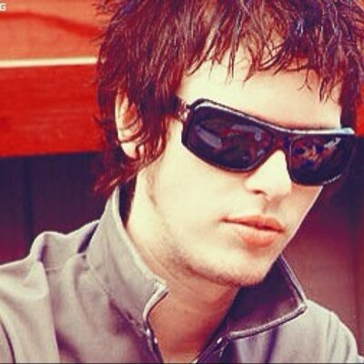
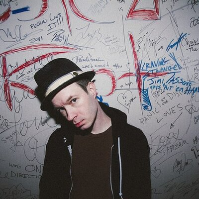
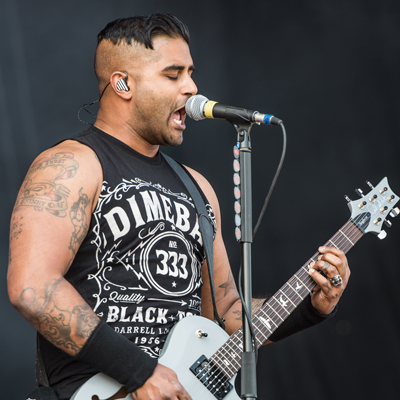

Deryck Jason Whibley (surnommé Bizzy D ou Sven), né à Scarborough, Ontario, Canada, le 21 mars 1980, est le chanteur, guitariste rythmique, leader et compositeur du groupe Sum 41, groupe de punk rock canadien, il est aussi producteur..

Jason McCaslin
Jason Paul McCaslin, dit Cone McCaslin, né le 3 septembre 1980 à North York en Ontario, aujourd'hui quartier de Toronto, est un musicien et compositeur canadien, membre des groupes Sum 41 et The Operation M.D..

Tom Thacker
Tom Thacker (11 avril 19741 à Langley) est un chanteur et guitariste canadien. Tom fait partie du groupe de rock Gob et depuis 2007 assiste Sum 41 lors des lives en tant que guitariste et pianiste. Il est depuis devenu un membre officiel du groupe et est présent sur les albums du groupe depuis Screaming Bloody Murder.

Dave Baksh
David Nizaam Baksh (surnommé Dave « Brownsound » Baksh) est un guitariste canadien né à Toronto (Canada) le 26 juillet 1980. Il est l'un des deux guitaristes du groupe Sum 41, assurant notamment les solos dans de nombreuses chansons du groupe comme In Too Deep, No Brains, The Hell Song, ou encore The Bitter End. Il s'occupe également des chœurs